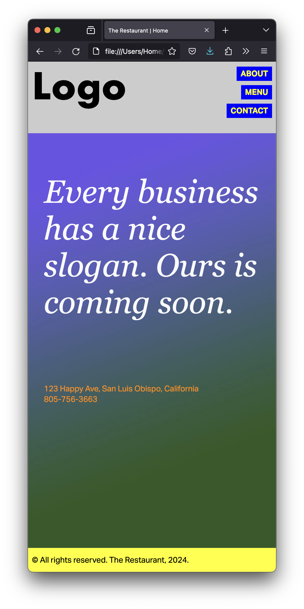
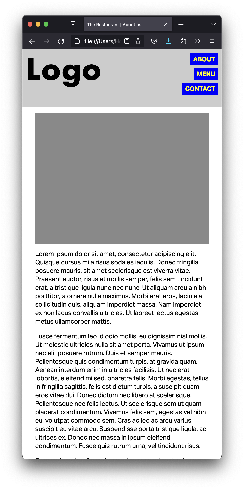
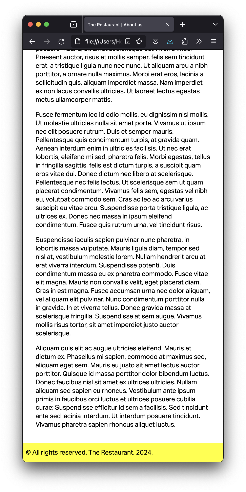
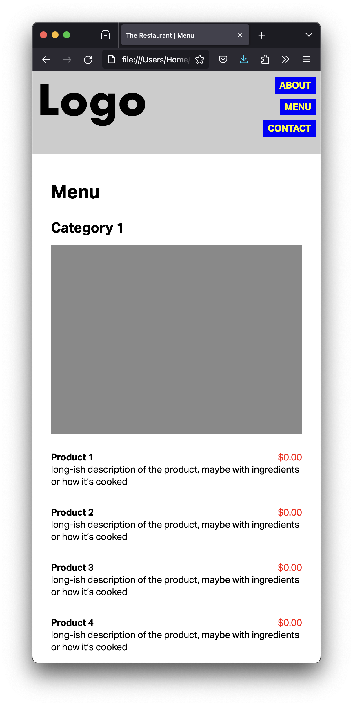
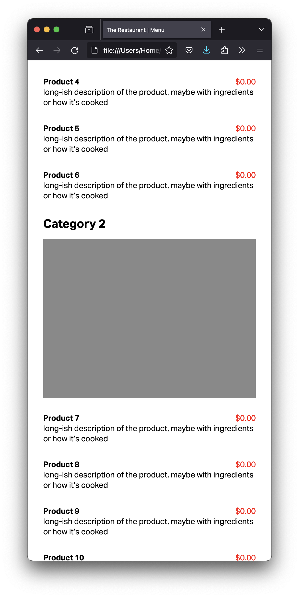
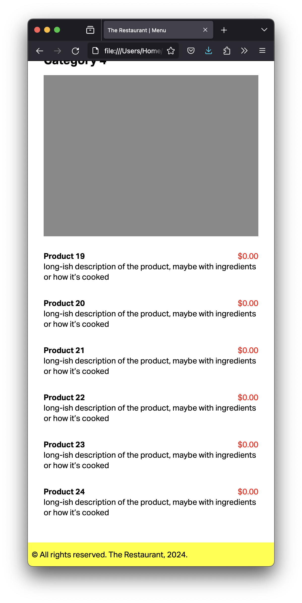
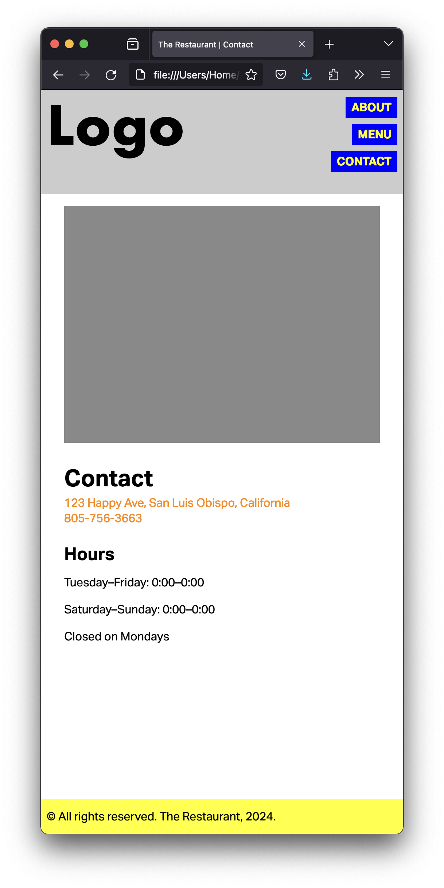

If you’ve been waiting to style your website from last week, I have good news and bad news. You’re going to style it, but it will look worse than last week.
Using your HTML files from last assignment, download this CSS file and background image and fill the blanks in the CSS to make the website look as close as possible to the screenshots below:







You can make your browser window really narrow, to avoid worrying about other sizes. {Even better, you can use the mobile built‑in simulator, also called User Agent, in your favorite browser.}
Copy your HTML files and images from last week to a new folder in your computer.
Copy the CSS file and the background image (that you just downloaded) to that same folder.
Start by reading my feedback from previous assignments, so you don’t make the same mistakes.
You will need a div with the class home-container on the home page and a div with the class container on the other pages. That div wraps all the content inside the body, including the header and the footer.
You will need a main element to wrap the content between the header and the footer of your content in all pages.
On the menu page, you’ll need to give the main element the class menu.
Fill the blanks in the CSS files to style your website according to the screenshots above.
When you’re done, use tools such as FreeFormatter, HTML Formatter, or Code Beautify to organize your HTML code.
Four pages with the filler content.
Use only serif and sans-serif for the fonts for now.
body {
font-family: sans-serif;
}
p.slogan {
font-family: serif;
font-style: italic;
}
Only one CSS file for all the pages. (Not one for each page.)
Penalties in the list of easy mistakes to avoid are 20 points now. Three or more mistakes is an automatic zero, with no further comments. There’s no reason not to avoid all of them, though.
Go to your public repository on GitHub, and open a new folder named grc338/website-mobile-first. (It’s a different URL from last week.)➤
Create a new index.html file and commit. ➤
Upload all four HTML files (index.html, about.html, menu.html and contact.html) to your GitHub repository. ➤
Upload your CSS file too.
Upload all your placeholder image files too.
Once you’re done, click on your name to check if it’s working. If you click on your name, and it’s not working, you probably made a mistake. If it works when you get the link from GitHub, but not when you click on your name, you definitely made a mistake.
Once you have clicked on your name and it worked, you want to answer to the questions on Canvas and submit the assignment.
If you clicked on your name and it didn’t work, don’t submit the quiz on Canvas. If you do and I get a 404 error, you won’t have a chance to resubmit it later.
Also, keep in mind that your repository is public and I can see when you have submitted each file. (Including the history of files.)